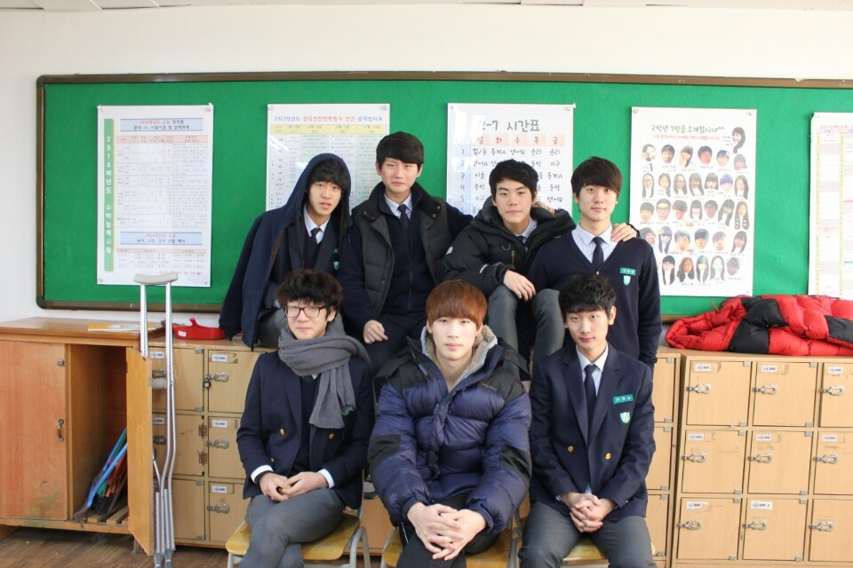
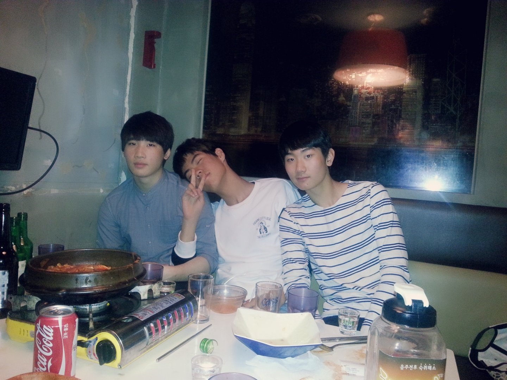
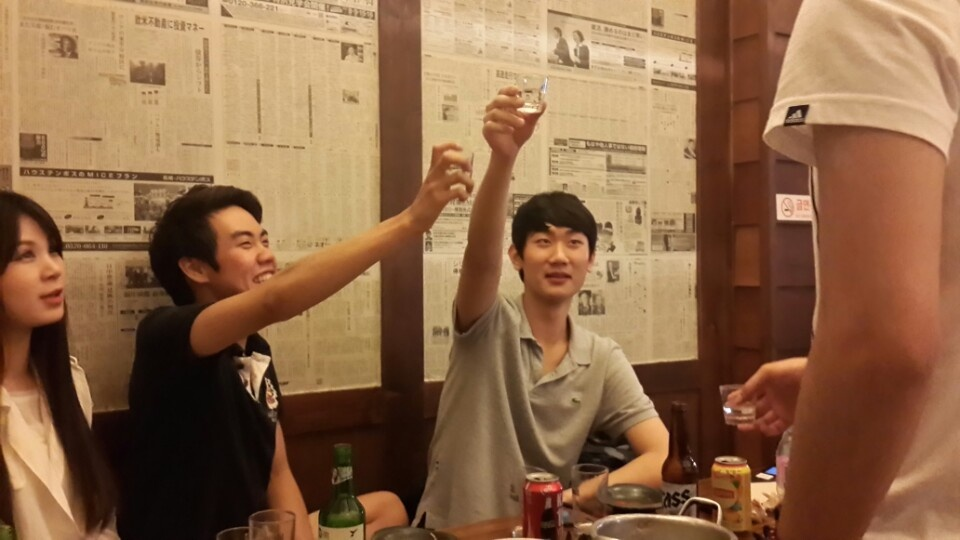

!DOCTYPE html
html lang="en"
head
title 첫 스무살 /title
body
section
img src="./스무살/1.jpg" alt="1-1"
고등학교를 졸업하고 성인이 되었다

/section
section
img src="./스무살/2.jpg" alt="1-1"
오뎅탕 하나 시켜서 물 계속 부어서 먹었는데 계원 1학년때 8년전에 했던걸 다시해서 술마시다 죽을 뻔했네

/section
section
img src="./스무살/3.jpg" alt="1-1"
저때 28살 누나들에게 나도 어른이라고 객기를 부린 기억이 있는데 지금 생각하면 너무 부끄럽다. 이때 기억으로 우리 21세기 동기들이랑 술마실때 모든거를 이해해 줄려고 한다

/section
/body
/html